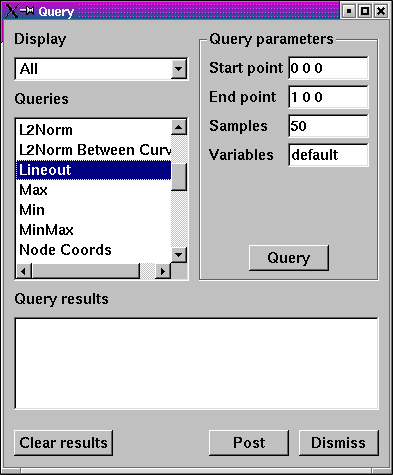

The following table lists built-in expressions that can be used to create more advanced expressions. Unless otherwise noted in the description, each expression takes scalar variables as its arguments.
|
Expression |
Meaning |
Usage |
|---|---|---|
|
{} |
Associate a list of expressions into a single variable. Usually used for defining a vector or tensor variable. |
{expr1, expr2 [, ...]} expri expr1 expr1 can be an expression of variables, another expression, or a constant defined over a mesh. Examples: vector = {a,b,c} tensor = {{a,b,c},{d,e,f},{g,h,i}} |
|
[] |
Access a subscript of a vector or tensor variable. |
expr[index] expr must be an expression that evaluates to a vector of tensor variable and index must be an integer greater than or equal to zero and less than the number of components in the variable being indexed. Example: velocity[0] |
|
() |
Associative parenthesis. |
Group mathematical operations to influence the order in which expressions are evaluated. |
|
- |
Unary negation |
-expr expr is any expression that evaluates to a scalar or vector field defined on a mesh. Example: -charge |
|
- |
Subtraction |
expr1 - expr2 expressions involving subtraction can be database variables, constants, or other expressions. Example: a - b |
|
+ |
Addition |
expr1 + expr2 Expressions involving addition can be database variables, constants, or other expressions. Example: a + b |
|
* |
Multiplication |
expr1 * expr2 Expressions involving multiplication can be database variables, constants, or other expressions. Multiplication is most often used with two scalar inputs but one of the inputs to the multiplication operator can be a vector if you want to scale a vector using a scalar or a constant. Example: a * b |
|
/ |
Division |
expr1 / expr2 Expressions involving division can be database variables, constants, or other expressions. Division is most often used with two scalar inputs but the first input can be a vector if you want to scale a vector using a scalar or a constant. Example: a / b |
|
^ |
Exponentiation |
expr1 ^ expr2 Expressions involving exponentiation can be database variables, constants, or other expressions. Example: a ^ b |
|
abs |
Absolute value |
abs(expr) expr can be an expression of database variables, constants, or other scalar expressions. |
|
acos |
Arccosine |
acos(expr) expr can be an expression of database variables, constants, or other scalar expressions. The acos expression returns an angle in radians. Example: angle = acos(value) |
|
and |
Logical and |
and(expr1, expr2) The logical and function returns a value of 1 (true) if both scalar input expressions expr1 and expr2 are not equal to zero. Otherwise, the logical and function returns zero. The logical and function is often used with other conditionals such as the if expression. Example: if(and(gt(pressure, 2.0), lt(pressure, 4.0)), pressure, 0.0) Meaning: if pressure is in the range (2.0, 4.0) then use the value for pressure. Otherwise, use zero. |
|
area |
Cell Area |
area(expr) expr must evaluate to a 2D mesh expression so VisIt can calculate the area of each 2D cell in the mesh and returns scalar values. Example: density = mass / area(hydro_mesh2d) |
|
array_compose |
Array compose |
array_compose(expr1, expr2, ..., exprN) Each argument to the array_compose expression, expri, must evaluate to a scalar expression and all of the input expressions must have the same centering. The array_compose expression creates a new array variable from the input expressions. Array variables are collections of scalar variables that are commonly used with certain plots to display the contents of multiple variables simultaneously. For example, the Label plot can display the values in an array variable. Example: array_compose(density, pressure, velocity[0], velocity[1], velocity[2]) |
|
array_decompose |
Array decompose |
array_decompose(expr1, expr2) expr1 must evaluate to an array variable. expr2 must evaluate to a number between 0 and the number of scalar components in the array variable minus 1. This expression isolates one scalar variable from an array variable. Example: array_decompose(array, 0) |
|
asin |
Arcsine |
asin(expr) expr can be an expression of database variables, constants, or other scalar expressions. The asin expression returns an angle in radians. Example: angle = asin(value) |
|
aspect |
Cell aspect ratio |
aspect(expr) expr must be an expression that evaluates to a mesh. The aspect function computes the aspect ratio for each cell in the mesh and returns scalar values. Cells with high aspect ratios (long and skinny) are often considered to be less fit than more squat cells. Example: aspect(hydro_mesh) |
|
aspect_gamma |
Cell aspect gamma |
aspect_gamma(expr) expr must be an expression that evaluates to a mesh. Example: aspect_gamma(hydro_mesh) |
|
atan |
Arctangent |
atan(expr) expr can be an expression of database variables, constants, or other scalar expression variables. The atan expression returns an angle in radians. Example: angle = atan(value) |
|
ceil |
Ceiling |
ceil(expr) expr must evaluate to a scalar expression. The ceil expression calculates the ceiling function. The ceiling is defined to be smallest integer that is bigger than the current value. Example: ceil(pressure) |
|
condition |
Condition number |
condition(expr) expr must be an expression that evaluates to a mesh. The condition expression returns the maximum condition number of the Jacobian matrix at the nodes of each cell in the mesh, resulting in a zone-centered, scalar expression. Example: condition(hydro_mesh) |
|
conn_cmfe |
Connectivity-based common mesh field evaluation |
conn_cmfe(expr1, expr2) expr1 is an expression commonly from a different database and it contains the field that will be mapped onto the mesh expression that is created by expr2. The conn_cmfe expression is used to map variables from one mesh onto another mesh. The mesh that donates the field being mapped can be a different time state of the same database or it can be in a different file than the destination mesh. You can use the conn_cmfe expression to compare the results from different simulation runs. For more information on using the conn_cmfe expression, see page 292. Examples: Map wave0020.silo's pressure variable the current mesh. conn_cmfe(<wave0020.silo:pressure>, quadmesh) Substract <mesh/ireg> variable from the last time state from the current time state. <mesh/ireg> - conn_cmfe(<allinone00.pdb[-1]id:mesh/ireg>, mesh) |
|
conservative_smooth |
Conservative smooth |
conservative_smooth(expr) expr must be an expression that evaluates to a scalar field. This expression applies the conservative smooth filter (an image processing filter) to a scalar field. The filter only considers a value and its immediate neighbors (26 neighbors in three dimensions, 8 in two dimensions). The filter only works on structured meshes. When performing a conservative smooth operation, a value is only replaced if it is outside the range of its immediate neighbors. If so, it is replaced with the closest value from its immediate neighbors. Example: conservative_smooth(intensity) |
|
coord, coords |
Mesh coordinates |
coord(expr) expr must be an expression that evaluates to a mesh. The coord expression extracts the coordinate fields from a mesh and returns them as a vector variable with 3 components. The resulting vector can be used to extract the x,y,z components of the mesh's coordinate field. Example: x = coord(Mesh)[0] |
|
cos |
Cosine |
cos(expr) Compute the cosine of an angle in radians. Expr can be an expression of database variables, constants, or other scalar expression that evaluate to an angle in radians. The cos expression returns a scalar expression. Example: x = radius * cos(angle) |
|
cross |
Vector cross product |
cross(expr1, expr2) The cross expression returns the vector cross product of the expr1 and expr2 vector expressions. Example: viewvec = cross(right_vec, up_vec) |
|
curl |
Curl |
curl(expr) The curl expression calculates the curl of the input expression, which must evaluate to a vector field. The result is also a vector unless the input data is 2D. When the input data set is 2D, the resulting curl vector always is (0,0,V) so the curl expression instead returns the scalar V. The curl expression must be declared as a vector for 3D data sets, but as a scalar for 2D data sets. Example: curl(vecfield) |
|
cylindrical_radius |
Cylindrical radius |
cylindrical_radius(expr) expr must be an expression that evaluates to a mesh. The cylindrical radius expression converts the coordinates of the input mesh from cartesian coordinates to cylindrical coordinates and returns the radius component of the cylindrical coordinates. Example: cylindrical_radius(hydro_mesh) |
|
cylindrical_theta |
Cylindrical theta |
cylindrical_theta(expr) expr must be an expression that evaluates to a mesh. The cylindrical theta expression converts the coordinates of the input mesh from cartesian coordinates to cylindrical coordinates and then returns the theta component of the cylindrical coordinates. Example: cylindrical_theta(hydro_mesh) |
|
deg2rad |
Degrees to radians |
deg2rad(expr) The deg2rad expression converts the input scalar expression, which is assumed to be in degrees, to radians. Example: angle_rad = deg2rad(angle) |
|
degree |
Mesh degree |
degree(expr) expr must be an expression that evaluates to a mesh. The degree expression creates a nodal scalar field that contains the number of cells that use each node. Example: degree(Mesh) |
|
det, determinant |
Matrix determinant |
determinant(expr) expr must evaluate to a 3x3 tensor. The determinant expression computes the determinant of a 3x3 matrix and returns the scalar result. Expression: detA = determinant(A) |
|
diagonal |
Diagonal ratio |
diagonal(expr) expr must be an expression that evaluates to a mesh. The diagonal expression computes the minimum and maximum diagonals for 3D hexahedral cells and returns the minimum diagonal length divided by the maximum diagonal length. Cells that have equal aspect ratios will have diagonal ratios of 1.0 while more oblong cells will have differing values. For cells that are not hexahedral, the diagonal expression returns -1. Example: diagonal(Mesh) |
|
dimension |
Pronto-specific length of stable time step |
dimension(expr) expr must be an expression that evaluates to a mesh. The dimension expression computes the characteristic length for stable time step calculation in the Pronto simulation code. Example: dimension(Mesh) |
|
divergence |
Divergence |
divergence(expr) The divergence filter calculates the divergence, which is the tendency of a fluid to spread out. The input expression must evaluate to a vector field. Divergence results in a scalar field. Example: divergence(vec) |
|
dot |
Vector dot product |
dot(expr1, expr2) The dot expression takes 2 vector inputs expr1 and expr2 and computes their vector dot product and returns the resulting scalar expression. Example: dot(vector1, vector2) |
|
effective_tensor |
Effective tensor |
effective_tensor(expr) expr must evaluate to a tensor expression. The effective_tensor expression determines the effective part of a 3x3 tensor and returns the resulting scalar expression. Example: effective_tensor(tensor1) |
|
eigenvalue |
Eigenvalue |
eigenvalue(expr) expr must evaluate to a 3x3 tensor. The eigenvalue expression returns the eigenvalues of a matrix as a scalar expression. Example: scalars = eigenvalue(tensor) |
|
eigenvector |
Eigenvector |
eigenvector(expr) expr must evaluate to a 3x3 tensor. The eigenvector expression returns the eigenvectors of a matrix as a vector expression. Example: vectors = eigenvector(tensor) |
|
eq, equal, equals |
Equality |
equal(expr1, expr2) The equal expression returns a value of 1 (true) if both input scalar expressions expr1 and expr2 are equal. Otherwise, the equal expression returns zero. The equal expression is often used with other conditionals such as the if expression. Example: if(eq(density, 1.0), density*2.0, 0.0) |
|
external_node |
External node |
external_node(expr) The external_node expression marks every node that is incident to an external face as '1', every node incident to only internal faces as '0'. Expr must be a mesh. If expr is a two-dimensional mesh, then the expression returns '1' if a node is incident to an external edge. Example: external_node(hydro_mesh) |
|
floor |
Floor |
floor(expr) expr must be an expression that evaluates to a scalar expression. The floor expression takes the floor of its expression argument, which is defined to be biggest integer that is smaller than the current value. Example: floor(pressure) |
|
ge, gte |
Greater than or equal |
ge(expr1, expr2) The ge expression returns a value of 1 (true) if expr1 >= expr2. Both input expressions must be scalar expressions. Example: if(ge(pressure, density), 1.0, 0.0) |
|
global_nodeid |
Global node numbers |
global_nodeid(expr) The global_nodeid expression returns a scalar field containing the global node numbers for a domain-decomposed mesh so that each node in the mesh is numbered such that it is part of the whole mesh. expr can be any expression that ultimately involves a single mesh. Example: global_nodeid(MESH) N = global_nodeid(x) |
|
global_zoneid |
Global zone numbers |
global_zoneid(expr) The global_zonid expression returns a scalar field containing the global cell numbers for a domain-decomposed mesh so that each cell in the mesh is numbered such that it is part of the whole mesh. expr can be any expression that ultimately involves a single mesh. Example: global_zoneid(MESH) N = global_zoneid(x) |
|
gradient |
Gradient |
gradient(expr) The gradient expression computes the gradient, which results in a vector expression, from expr, which must evaluate to a scalar expression. The gradient calculation method varies depending on the type of the mesh over which the input is defined. Example: volume_normals = gradient(vals) |
|
gt |
Greater than |
gt(expr1, expr2) The gt expression returns a value of 1 (true) if expr1 > expr2. Both input expressions must be scalar expressions. Example: density = mass / if(gt(volume, 0.0), volume, 0.00001) |
|
if |
Conditional |
if(expr1, expr2, expr3) The if expression is used to select values based on a condition. Expr1 must evaluate to a scalar. When expr1's values are not equal to zero then the condition is true and the if expression returns the value for expr2. When expr1's values are equal to zero, values for expr3 are returned. Example: inv_pressure = 1.0 / if(gt(pressure,0.0), pressure, 0.001) |
|
inverse |
Matrix inverse |
inverse(expr) expr must evaluate to a 3x3 tensor expression. The inverse expression calculates the matrix inverse of the input matrix. Example: invA = inverse(A) |
|
jacobian |
Jacobian |
jacobian(expr) expr must be an expression that evaluates to a mesh. The jacobian expression returns a scalar expression. Example: jacobian(hydro_mesh) |
|
laplacian, Laplacian |
Laplacian |
laplacian(expr) expr must be an expression that evaluates to a scalar. The laplacian expression returns a scalar expression containing the Laplacian of the input scalar field. Example: Laplacian(pressure) |
|
largest_angle |
Largest angle |
largest_angle(expr) expr must be an expression that evaluates to a 2D mesh. The largest_angle expression calculates a cell-centered scalar field containing the value of the largest interior angle in degrees. Only triangle and quadrilateral cells are considered. Example: largest_angle(hydro_mesh) |
|
le, lte |
Less than or equal |
le(expr1, expr2) The le expression returns a value of 1 (true) if expr1 <= expr2. Both input expressions must be scalar expressions. Example: if(le(pressure, density), 1.0, 0.0) |
|
ln |
Natural logarithm |
ln(expr) expr can be a database variable, constant, or other scalar expression. The ln expression computes the natural logarithm of the input scalar expression. Example: ln(density) |
|
log, log10 |
Base 10 logarithm |
log(expr) expr can be a database variable, constant, or other scalar expression. The log expression computes the base 10 logarithm of the input scalar expression. Example: log(density) |
|
lt |
Less than |
lt(expr1, expr2) The le expression returns a value of 1 (true) if expr1 < expr2. Both input expressions must be scalar expressions. Example: if(lt(pressure, density), 1.0, 0.0) |
|
magnitude |
Vector magnitude |
magnitude(expr) expr can be a database variable, constant, or other vector expression. The magnitude expression computes the magnitude of the vector and returns a scalar expression. Example: magnitude(vector1) |
|
materror |
Material error |
materror(expr1, expr2) expr1 must be an expression that evaluates to a material. expr2 must be an identifier for the name of a material, which can be either numeric or a string constant matching the name of a material in the database. The materror expression computes the difference between the volume fractions stored in the database and those that were used by VisIt's material reconstruction algorithm. Example: materror(mat1, 1) |
|
matvf |
Material volume fraction |
matvf(expr1, expr2) expr1 must be an expression that evaluates to a material. expr2 must be an identifier for the name of a material, which can either be numeric or can be a string constant matching the name of a material in the database. The matvf expression extracts the material volume fractions from a material for a specified material name and returns the results in a scalar expression. Examples: percent_chrome = matvf(mat1, "2 chrome") percent_1 = matvf(Material, 1) |
|
max_edge_length |
Maximum edge length |
max_edge_length(expr) expr must be an expression that evaluates to a mesh. The max_edge_length expression calculates the edge length for each edge in a cell, assigning the length of the longest edge to the entire cell. Example: max_edge_length(hydro_mesh) |
|
max_side_volume |
Maximum side volume |
max_side_volume(expr) expr must be an expression that evaluates to a three-dimensional mesh. The max_side_volume expression calculates the side volume for each side in a cell, assigning the value of the biggest side volume to the entire cell. A "side" is a tetrahedron that covers one edge of a cell plus parts of the surrounding faces.When a cell has negative side volume, it is usually twisted. Example: max_side_volume(hydro_mesh) |
|
mean |
Mean |
mean(expr) expr must evaluate to a scalar expression. The mean expression calculates the mean average of a scalar field. The mean is calculated using the value and its immediate neighbors. The mean expression only considers the value and its 26 neighbors in three dimensions, or just the eight neighbors in two dimensions. This expression only works on structured meshes. Example: mean(intensity) |
|
median |
Median |
median(expr) expr must evaluate to a scalar expression. The median expression Calculates the median of a scalar field. The median is calculated using the value and its immediate neighbors. The median expression only considers the value and its 26 neighbors in three dimensions, or just the eight neighbors in two dimensions. This expression only works on structured meshes. Example: median(intensity) |
|
min_edge_length |
Minimum edge length |
min_edge_length(expr) expr must be an expression that evaluates to a mesh. The min_edge_length expression calculates the edge length for each edge in a cell, assigning the length of the smallest edge to the entire cell. Example: min_edge_length(hydro_mesh) |
|
min_side_volume |
Minimum side volume |
min_side_volume(expr) expr must be an expression that evaluates to a three-dimensional mesh. The min_side_volume expression calculates the side volume for each side in a cell, assigning the value of the smallest side volume to the entire cell. A "side" is a tetrahedron that covers one edge of a cell plus parts of the surrounding faces. When a cell has negative side volume, it is usually twisted. Example: max_side_volume(hydro_mesh) |
|
mirvf |
Material interface reconstruction volume fraction |
mirvf(expr1, expr2, expr3, expr4) expr1 must be an expression that evaluates to a material. expr2 must be an expression that evaluates to a scalar field containing the zone id's for the mesh. expr3 must be an expression variable that evaluates to a scalar field containing the volumes or areas of each cell in the mesh. expr4 must be an expression that evaluates to a list of material names or numbers. The mirvf expression returns the volume fractions computed by VisIt's material interface reconstruction algorithm. The volume fractions computed by VisIt's material interface reconstruction algorithm do not always match what is stored in the database because VisIt's algorithm strives to maintain continuous interfaces rather than accuracy. Example: mirvf(mat1, zoneid(curvmesh2d), area(curvmesh2d), [1]) |
|
mod |
Modulo |
mod(expr1, expr2) expr1 and expr2 must be expressions that evaluate to integer scalar fields. The mod expression calculates expr1 modulo expr2. This expression is typically used in conjunction with the expressions ceil, floor, or round. Example: mod(var1, var2) |
|
neighbor |
Neighbor |
neighbor(expr) expr must be an expression that evaluates to a mesh. Neighbor creates a node-centered scalar on a point mesh representation of the original mesh. Expression: neighbor(hydro_mesh) |
|
nmats |
Number of materials |
nmats(expr) expr must be an expression that evaluates to a material. The nmats expression creates a cell-centered scalar variable containing the number of materials in each cell. This expression can be used with the Threshold operator to remove cells that do not have a desired number of materials. Example: nmats(material) |
|
node_degree |
Node degree |
node_degree(expr) expr must be an expression that evaluates to a mesh. The node_degree expression calculates how many edges each node it part of and stores that value as a node-centered scalar expression. Example: node_degree(MESH) |
|
nodeid |
Node number |
nodeid(expr) expr can be any expression that involves a single mesh. The nodeid expression creates a node-centered scalar field containing the node index of each mode in the mesh. The nodeid expression's primary use is in debugging VisIt plots. Example: nodeid(MESH) |
|
not |
Logical not |
not(expr) expr must be a database variable, constant, or other scalar expression. The not expression returns 1 (true) if the input expression equals zero and zero otherwise. Expression: outside = not(inside) |
|
notequal, notequals. ne |
Not equal |
notequal(expr1, expr2) The notequal expression returns 1 (true) if expr1 != expr2 and zero otherwise. Both expr1 and expr2 must be scalar expressions. Example: if(notequal(mass, 12.3), 1, 0) |
|
oddy |
General distortion measure |
oddy(expr) expr must be an expression that evaluates to a mesh. The oddy expression calculates a general distortion measure based on the left Cauchy-Green tensor. Example: oddy(MESH) |
|
or |
Logical or |
or(expr1, expr2) The logical or expression returns a value of 1 (true) either of the scalar input expressions expr1 and expr2 are not equal to zero. If both input expressions are equal to zero then the expression returns zero. The logical or expression is often used with other conditionals such as the if expression. Example: if(or(lt(pressure, 2.0), gt(pressure, 4.0)), pressure, 0.0) Meaning: if pressure is in the range (,2.0) or (4.0, ) then use the value for pressure. Otherwise, use zero. |
|
polar |
Convert to polar coordinates |
polar(expr) expr must be a database variable, constant, or other vector expression. The polar expression converts a vector, which is assumed to represent cartesian coordinates (x, y, z), into polar coordinates (r, theta, phi). Example: vec = polar(coord(MESH)) |
|
polar_phi |
Phi component of polar coordinate representation of mesh. |
polar_phi(expr) expr must evaluate to a mesh. The polar_phi expression converts the coordinates of the input mesh from cartesian coordinates to polar coordinates and then returns the phi component of the cylindrical coordinates. Example: polar_phi(hydro_mesh) |
|
polar_radius |
Radius component of polar coordinate representation of mesh. |
polar_radius(expr) expr must evaluate to a mesh. The polar_radius expression converts the coordinates of the input mesh from cartesian coordinates to polar coordinates and then returns the radius component of the cylindrical coordinates. Example: polar_radius(hydro_mesh) |
|
polar_theta |
Theta component of polar coordinate representation of mesh. |
polar_theta(expr) expr must evaluate to a mesh. The polar_theta expression converts the coordinates of the input mesh from cartesian coordinates to polar coordinates and then returns the theta component of the cylindrical coordinates. Example: polar_theta(hydro_mesh) |
|
principal_deviatoric_tensor |
Principal deviatoric vector of tensor |
principal_deviatoric_tensor(expr) expr can be a database variable, constant, or other 3x3 tensor expression. The principal_tensor computes the deviatoric principals of a tensor, which result in a vector expression. Example: principal_deviatoric_tensor(tensor1) |
|
principal_tensor |
Principals of tensor |
principal_tensor(expr) expr can be a database variable, constant, or other 3x3 tensor expression. The principal_tensor computes the principals of a tensor, which result in a vector expression. Example: principal_tensor(tensor1) |
|
procid |
Processor Rank |
procid(expr) expr must be an expression that evaluates to a mesh. The procid expression returns the processor rank of the compute engine that is handling the current domain of the specified mesh. Example: pid = procid(MESH) |
|
rad2deg |
Radians to degrees |
rad2deg(expr) The rad2deg expression converts the input scalar expression, which is assumed to be in radians, to degrees. Example: angle_deg = rad2deg(angle) |
|
random, rand |
Random number |
random(expr) expr must be an expression that evaluates to a mesh. The random expression creates a scalar field over the specified mesh where each node in the mesh gets a different random number in the range: [0,1]. Example: random(MESH) |
|
recenter |
Recenter variable |
recenter(expr) expr must be a database variable or other expression that eventually involves a database variable. Two common types of variable centering are cell-centered and node-centered. The recenter expression switches the centering for the input expression. Use the recenter expression to explicitly force a specific variable centering or to make another variable. Example: density + recenter(temp) |
|
relative_difference |
Relative difference |
relative_difference(expr1, expr2) The relative_difference expression computes the relative difference between two scalar expressions using the following formula: if (A == B && A == 0) then 0. else (A-B) / (abs(A) + abs(B)) Example: relative_difference(x,y) |
|
relative_size |
Relative cell size |
relative_size(expr) expr must be an expression that evaluates to a mesh. The relative_size calculates the relative size of cells in the mesh by finding the minimum value of J or 1/J where J is the determinant of a weighted Jacobian matrix. Example: relative_size(MESH) |
|
revolved_surface_area |
Revolved surface area |
revolved_surface_area(expr) expr must be an expression that evaluates to a 2D mesh. The revolved_surface_area expression revolves triangle and quad cells about the X-axis and calculates the surface area of the revolved cell. The result is a cell-centered scalar expression. Example: revolved_surface_area(mesh2d) |
|
revolved_volume |
Revolved cell volume |
revolved_volume(expr) expr must be an expression that evaluates to a 2D mesh. The revolved_volume expression calculates the volume of a triangle or quad cell revolved about the X-axis. The result is a cell-centered scalar expression. Example: vol = revolved_volume(mesh2d) |
|
round |
Round |
round(expr) expr must be an expression that evaluates to a scalar expression. The round expression rounds the value of its expression argument to the nearest integer value. If two integers are equally close then the round expression rounds up. For example, 8.5 gets rounded up to 9. Example: round(pressure) |
|
scaled_jacobian |
Scaled jacobian |
scaled_jacobian(expr) expr must be an expression that evaluates to a mesh. The scaled jacobian expression calculates a scalar expression based on the minimum of the Jacobian divided by the lengths of a cell's edge vectors. Example: scaled_jacobian(MESH) |
|
shape |
Cell shape |
shape(expr) expr must be an expression that evaluates to a mesh. The shape expression calculates 2 divided by the condition number of the weighted Jacobian matrix. Example: shape(MESH) |
|
shape_and_size |
Cell shape and size |
shape_and_size(expr) expr must be an expression that evaluates to a mesh. The shape_and_size expression calculates the shape and size expressions and multiplies their values. Example: shape_and_size(MESH) |
|
shear |
Shear |
shear(expr) expr must be an expression that evaluates to a mesh. The shear expression calculates mesh shear and results in a scalar expression. Example: shear(MESH) |
|
sin |
Sine |
sin(expr) Compute the sine of an angle in radians. Expr can be an expression of database variables, constants, or other scalar expression that evaluate to an angle in radians. The sin expression returns a scalar expression. Example: y= radius * sin(angle) |
|
skew |
Mesh skew |
skew(expr) expr must be an expression that evaluates to a mesh. The skew expression calculates the skew for each cell in the mesh and stores the result in a cell-centered scalar expression. The skew is the maximum |cosA| where A is the angle between the edges at the cell center. Cells with high skew are generally created in error. Example: skew(MESH) |
|
smallest_angle |
Smallest angle |
smallest_angle(expr) expr must be an expression that evaluates to a 2D mesh. The smallest_angle expression calculates a cell-centered scalar field containing the value of the smallest interior angle in degrees. Only triangle and quadrilateral cells are considered. Example: smallest_angle(hydro_mesh) |
|
specmf |
Species mass fraction |
specmf(expr1, expr2, expr3 [, expr4]) The specmf expression extracts the mass fractions for a material species from a species variable and returns a mesh-sized scalar field that can be used in other expressions or plotted. expr1 must a species variable; the default name for a species variable is: Species. expr2 must be a single material number or material name. expr3 must be a single species name or number or list of species names or numbers for the given material. Lists of species are enclosed in square brackets [] and are comma-separated. The expr4 argument is optional and is a boolean value that weights the species masses by the material volume fraction if it is set to true. When expr4 is not provided, its value is assumed to be false. Example: specmf(Species, "Air", "Argon") |
|
sq, sqr |
Square |
sqr(expr) expr can be a database variable, constant, or other scalar expression. The sqr expression multiplies the input values by themselves, squaring them. Example: x_times_x = sqr(x) |
|
sqrt |
Square root |
sqrt(expr) expr can be a database variable, constant, or another scalar expression. The sqrt expression computes the square root of the input expression. Example: dist = sqrt(x*x + y*y + z*z) |
|
stretch |
Cell stretch |
stretch(expr) expr must be an expression that evaluates to a mesh. The stretch expression calculates the square root of 3 times the minimum edge length divided by the maximum diagonal length. Stretch is only calculated for hex and quad cells. Example: stretch(HexMesh) |
|
surface_normal |
Surface normal |
surface_normal(expr) Calculates the direction normal to each vertex. This incorporates the normal directions of each face a vertex is incident to. Expr must be a mesh that is a three dimensional surface. Note that you will have to apply the ExternalSurface operator and the DeferExpression operator in order for the surface_normal expression to be evaluated on the plot as it is displayed in the visualization window. Example: surface_normal(surface_mesh) |
|
tan |
Tangent |
tan(expr) Compute the tangent of an angle in radians. Expr can be an expression of database variables, constants, or other scalar expression that evaluate to an angle in radians. The tan expression returns a scalar expression. Example: y = radius * sin(angle) |
|
taper |
Mesh taper |
taper(expr) expr must be an expression that evaluates to a mesh. The taper expression calculates cell taper, which is the maximum ratio of lengths derived from opposite edges. Taper is only calculated for hex and quad cells. Example: taper(MESH) |
|
tensor_maximum_shear |
Maximum tensor shear |
tensor_maximum_shear(expr) expr can be a database variable, constant, or other 3x3 tensor expression. The result is a scalar expression. Example: tensor_maximum_shear(tensor) |
|
trace |
Trace of tensor |
trace(expr) Expr can be an expression of database variables, constants, or other tensor expressions. The trace expression calculates the trace of a 3x3 tensor, which is the sum of the diagonal components. The result is a scalar expression. Example: trace_times_3 = trace(tensor) * 3.0 |
|
var_skew |
Apply skew scaling |
var_skew(expr1, expr2) Both expr1 and expr2 must evaluate to scalar expressions. More commonly, expr2 is a floating point constant indicating the skew factor to be used in the calculation. The var_skew expression applies skew scaling, as performed in the Pseudocolor plot, to the input data. Skew scaling can be used to highlight either small values or large values, depending on the skew factor that you provide. Expression: var_skew(density, 10.) |
|
volume |
Cell volume |
volume(expr) expr must be an expression that evaluates to a 3D mesh or database variable. The volume expression calculates the volume of each cell in the mesh and creates a cell-centered scalar expression containing those values. Volumes of 2D meshes are zero. Example: volume(ucdmesh) |
|
warpage |
Cell warpage |
warpage(expr) expr must be an expression that evaluates to a mesh. The warpage expression calculates how much quad cells deviate from a plane. Warpage is only calculated for quad cells. Example: warpage(quadmesh) |
|
zoneid |
Zone number |
zoneid(expr) expr can be any expression involving a single mesh. The zoneid expression creates a zone-centered scalar field for the mesh used by the input expression. The zoneid expression is primarily used to debug new VisIt components such as plot plugins or database reader plugins. Example: zoneid(density) |
|  |
| Figure 5 |